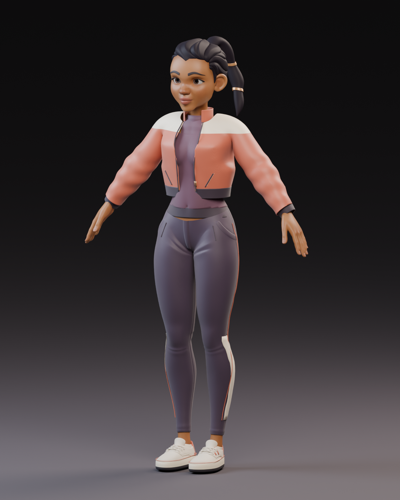
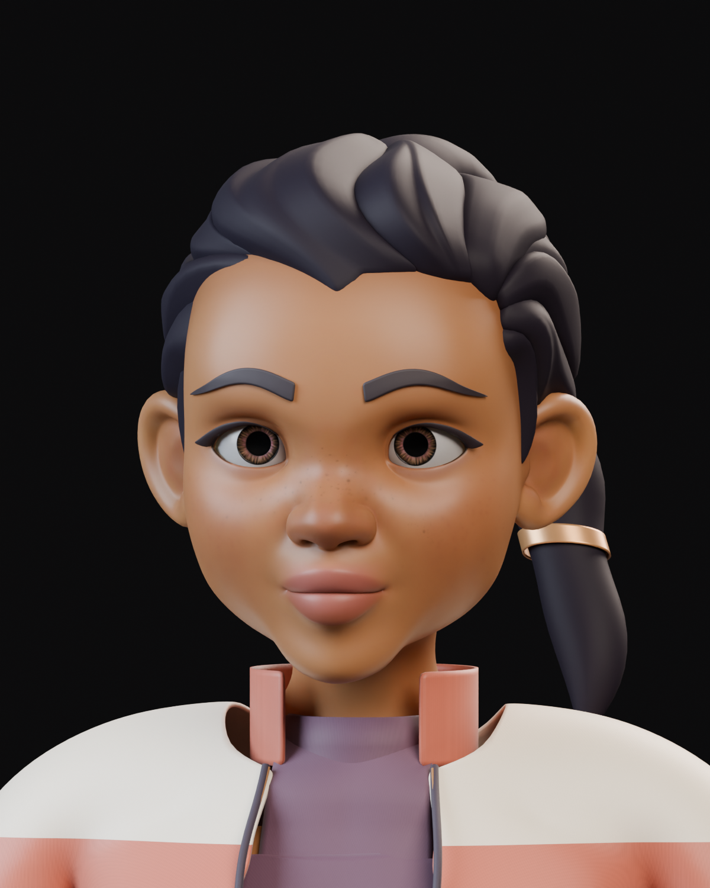

NYRA · Visual production
ACTUAL BLENDER MODEL & RENDERSReshaped face and proportions, brown eyes, fitted eyebrows, cropped coral bomber, plum trackwear, sculpted hair and new sneaker details. Static visual model; final rigging remains pending.


All ten proof renders


Anatomy adapted from Rain Rig (CC) Blender Foundation | studio.blender.org · CC BY 4.0. NYRA modifications and limitations: quality report.
GLB inspection bench
LOCAL · NO UPLOADSNYRA’s actual geometry with baked color textures. Static review model; final rig and gameplay optimization are pending.
Loading viewer…